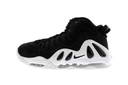
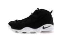
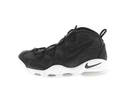

No Picture

NIKE 161206 NIKE AIR MAX UPTEMPO 97 399207-004 BLACK/BLACK-WHITE-BLACK ナイキ エア マッ...
※当店では実店舗とWeb Shopとの在庫を共有しております。当店在庫状況の変化によりWeb Shopの在庫更新に遅れが生じる場合がございます。その為、商品ご注文後でも商品をお届けすることが出来ない場合がございます。誠に恐れ入りますが、予めご理解ご了承頂けますようお願い申し上げます。【12月6日発売】※こちらの商品は12月6日以降の発送を予定しております。 ※こちらのページの商品は、ご利用のお客様に公平な販売機会をご提供させていただく為、お一人様一足限りのご注文受付とさせて頂きます。同一氏名・アカウントでの複数購入をされた場合、理由の如何に因ず注文内容をキャンセルさせて頂きます。 ※こちらのページの商品は、数量限定モデルの為、ご注文確定後のキャンセル・返品・サイズ交換は出来ません。 ご購入の際には、以上の点についてご理解ご了承頂けますよう宜しくお願い申し上げます。Uptempo familyより新たなBlack packの登場。96年のUptempoが人気の昨今、95年や97年にも登場したMAX UPTEMPOが待望の復活!!
19,440円
レビュー:0件
No Picture

NIKE 161206 AIR MAX UPTEMPO 311090-005 BLACK/BLACK-WHITE-BLACK ナイキ エア マックス アップテン...
※当店では実店舗とWeb Shopとの在庫を共有しております。当店在庫状況の変化によりWeb Shopの在庫更新に遅れが生じる場合がございます。その為、商品ご注文後でも商品をお届けすることが出来ない場合がございます。誠に恐れ入りますが、予めご理解ご了承頂けますようお願い申し上げます。【12月6日発売】※こちらの商品は12月6日以降の発送を予定しております。 ※こちらのページの商品は、ご利用のお客様に公平な販売機会をご提供させていただく為、お一人様一足限りのご注文受付とさせて頂きます。同一氏名・アカウントでの複数購入をされた場合、理由の如何に因ず注文内容をキャンセルさせて頂きます。 ※こちらのページの商品は、数量限定モデルの為、ご注文確定後のキャンセル・返品・サイズ交換は出来ません。 ご購入の際には、以上の点についてご理解ご了承頂けますよう宜しくお願い申し上げます。Uptempo familyより新たなBlack packの登場。96年のUptempoが人気の昨今、95年や97年にも登場したMAX UPTEMPOが待望の復活!!
18,360円
レビュー:0件
No Picture

【お一人様1点まで!!】NIKE AIR MAX UPTEMPO(311090-005)BLACK/BLACK-WHITE-BLACK【ナイキ エア マックス ...
エアマックスアップテンポシリーズをブラックとホワイトの2トーンカラーでまとめたブラックパックの登場。 歴代のアップテンポシリーズがブラックのアッパーとホワイトのソールでまとめた端正なカラーリングのモデルとなっています。 ※お一人様、一足限りのご注文をお願い致します。 ご利用いただくお客様に広く公平な販売機会をご提供させていただく為、 本ページの商品について、以下の事項に該当する場合、理由の如何に関わらずキャンセルをさせていただきます。 *事前連絡は原則おこないません。予めご了承ください。 下記の内容についてご確認いただいた上でご購入手続きにお進みください。 1）同一アカウントによる複数購入*（氏名やメールアドレスなどの一致） 2）大量購入が目的の情報入力 3）ご本人様以外の代理購入 4）配送日のご指定がご注文日から10日を超えた場合** *ご注文後の変更やお手続きのミスなどによる情報変更は原則お断りいたします。 **先行予約商品については発売日から10日を超えた場合 ※商品ページの更新が定期的に行われているため、 検索結果が実際の商品ページの内容（価格、在庫表示等） とは異なる場合がございます。 ご注意ください。 関連商品 NIKE AIR MAX UPTEMPO311090-005 NIKE AIR MAX UPTEMPO 97399207-004 NIKE AIR MAX 2 UPTEMPO QS919831-001 おすすめ商品 AIR JORDAN 12 RETRO130690-400 AIR JORDAN 12 RETRO130690-004 NIKEAIR MAX ZERO QS789695-002 NIKE ZOOM TALARIA MID FK856957-100 NIKE ZOOM TALARIA MID FK856957-200 NIKEAIR FORCE 1'07 LV8718152-204 NIKEAIR FORCE 1'07 LV8718152-201 VANSLAMPIN商品番号：VN0A2VIFLF9 ReebokINSTAPUMP FURY OGV65750 UNDEFEATEDSCRIPT LOGO BEANIE5454 UNDEFEATEDSMALL 5 STRIKE NEW ERA CAP531235 UNDEFEATEDBUBBA TEE5900871 UNDEFEATEDORIGINAL HOOD5920867 NIKESB ICON PULLOVER HOODIE846887-010 NIKESB ICON PULLOVER HOODIE商品番号：846887-063 NIKE3P DRI-FIT NON CUSHION LOW CUT SOCK / WHITE UNDEFEATED X JASON MARKK SHOECARE KIT 4ozJM-UND01
18,360円
レビュー:0件
No Picture
【期間限定★クーポンでさらに100円off】【スーパーSALE★超目玉】VANS バンズ スリッポン スニーカー オーセンティック メンズ レディース auth...
商品と一緒にカートに入れてご注文ください。ラッピングはコチラをクリック 商品説明 VANSのクラシックラインの代表モデル・AUTHENTIC 1966年VANS設立時最初に登場したVANSの歴史を語る上で外せないモデルです。 シンプルなデッキスタイルのシューズが様々なシーンに合わせられます。 ベーシックな定番カラーは、男女スタイル問わず合わせられる汎用性の高い1足です！ 素材：キャンバス ★ご購入前に必ずご確認ください★ 当店での取扱商品の大半は海外より直輸入の商品になります。 ボックスに少しのダメージやマーキング・バーコード等のカットなどがあるものも御座います。 ご理解の上、ご購入お願いします。 商品そのものの色を表現できるよう努力しておりますが、 WindowsとMacまたは、モニターの環境や設定などで、実際の色そのものとは若干違う場合がございます 。 ブランド名 VANS 商品名 オーセンティック 原産国 チャイナ 比較対照価格 ブランド公式サイト掲載価格5,940円(税込) 比較対照価格の確認方法 ブランド公式サイト 比較対照価格確認日 2015年11月12日 型番 1-TrueWhite(VN000EE3W00) 2-Black(VN000EE3BLK) 3-Red(VN-0 EE3RED) 4-Navy(VN-0EE3NVY) 5-Black/Black(VN-0 EE3BKA) 6-PlumPurple(VN-0ZUKFSE) 7-TwilightBlue(VN-0ZUKFSW) 8-VibrantYellow(VN-0ZUKFSX) 9-Pewter/Black(VN-0JRAPBQ) 10-SulphurSpring(VN-018BH1T) 11-OrionBlue(VN-0 18BH1R) 12-White/white(VN000EE3WHT) 13-PRISM PINK/TRUE WHITE(VN-0 ZUK2W0) 商品に関する注意点 本製品は並行輸入品となります。 比較対照商品との相違点 正規販売店の発行する製品保証対象外です。 広告文責 本表の内容は当店責任において確認したものです。 【コンビニ受取対応商品】 【はこぽす対応商品】 【楽天BOX受取対象商品（メンズファッション）】 【楽天BOX受取対象商品（レディースファッション）】▲バンズその他のモデルはコチラ▲ ブランド名 VANS（バンズ） 商品名 AUTHENTIC(オーセンティック) 品番 1-TrueWhite(VN000EE3W00) 2-Black(VN000EE3BLK) 3-Red(VN-0 EE3RED) 4-Navy(VN-0EE3NVY) 5-Black/Black(VN-0 EE3BKA) 6-PlumPurple(VN-0ZUKFSE) 7-TwilightBlue(VN-0ZUKFSW) 8-VibrantYellow(VN-0ZUKFSX) 9-Pewter/Black(VN-0JRAPBQ) 10-SulphurSpring(VN-018BH1T) 11-OrionBlue(VN-0 18BH1R) 12-White/white(VN000EE3WHT) 13-PRISM PINK/TRUE WHITE(VN-0 ZUK2W0) 商品説明 VANSのクラシックラインの代表モデル・AUTHENTIC 1966年VANS設立時最初に登場したVANSの歴史を語る上で外せないモデルです。 シンプルなデッキスタイルのシューズが様々なシーンに合わせられます。 ベーシックな定番カラーは、男女スタイル問わず合わせられる汎用性の高い1足です！ 素材 キャンバス ■注意事項 ★ご購入前に必ずご確認ください★ 当店での取扱商品の大半は海外より直輸入の商品になります。 ボックスに少しのダメージやマーキング・バーコード等のカットなどがあるものも御座います。 ご理解の上、ご購入お願いします。商品そのものの色を表現できるよう努力しておりますが、 WindowsとMacまたは、モニターの環境や設定などで、実際の色そのものとは若干違う場合がございます 。
3,999円
レビュー:367件
No Picture
【NIKE】 ナイキ AIR FORCE 1 07 エアフォース 1 07 315122-111 111WHT/WHT
1982年に発売されたナイキバスケットボールの名作・エアフォース1。常にスニーカーブームの中心にあり、もはや国民的スニーカーともいえるナイキの看板スニーカー。2008年からは「NIKE ICONS」として他のモデルと一線を画すラインとして展開されています!!クラシックなシルエットが長い歳月を経てなおファンを魅了し続けるモデルで、とにかく幅広いシーンで使える、スニーカー界における永久不変の定番です!! 素材＝天然皮革・合成繊維【サイズ目安】(個人差がございますので、あくまでも目安とお考え下さい。)このシューズの作りは小さめです。0.5cm上のサイズをおすすめします。※画像はサンプルのため、若干の仕様変更がある場合がございます。予めご了承下さい。 表記サイズについてのご注意 [ABCMART][ABCmart][abcmart][ABCマート][abcマート][エービーシーマート][エービーシー][エービーシー マート]
10,800円
レビュー:284件
No Picture
定価から40％オフにて！NEW BALANCE「ニューバランス」new balanceM996 GY グレーカラーMADE IN USA「アメリカ製」Dワイズ ...
■商品説明■ NEW BALANCE「ニューバランス」から人気品番「M996」シリーズから、一番人気のカラーのグレーが入荷！。アッパーには上質なスエード、通気性・軽量性に優れるメッシュを使用。Made in U.S.A.の確かな完成度で高級感溢れるルックスに仕上がっています。あわせやすい配色です。オススメアイテムです。 相場価格をはるかに下回る価格にてご提供！ メーカー希望小売価格はメーカーサイトに基づいて掲載しています■商品説明■ NEW BALANCE「ニューバランス」から人気品番「M996」シリーズから、一番人気 カラーのグレーが入荷！。アッパーには上質なスエード、通気性・軽量性に優れるメッシュ を使用。Made in U.S.A.の確かな完成度で高級感溢れるルックスに仕上がっています。 相場価格をはるかに下回る価格にてご提供！
14,904円
レビュー:132件
No Picture
【お一人様1点まで!!】NIKE AIR MAX UPTEMPO 97(399207-004)BLACK/BLACK-WHITE-BLACK【ナイキ エア マッ...
エアマックスアップテンポシリーズをブラックとホワイトの2トーンカラーでまとめたブラックパックの登場。 歴代のアップテンポシリーズがブラックのアッパーとホワイトのソールでまとめた端正なカラーリングのモデルとなっています。 ※お一人様、一足限りのご注文をお願い致します。 ご利用いただくお客様に広く公平な販売機会をご提供させていただく為、 本ページの商品について、以下の事項に該当する場合、理由の如何に関わらずキャンセルをさせていただきます。 *事前連絡は原則おこないません。予めご了承ください。 下記の内容についてご確認いただいた上でご購入手続きにお進みください。 1）同一アカウントによる複数購入*（氏名やメールアドレスなどの一致） 2）大量購入が目的の情報入力 3）ご本人様以外の代理購入 4）配送日のご指定がご注文日から10日を超えた場合** *ご注文後の変更やお手続きのミスなどによる情報変更は原則お断りいたします。 **先行予約商品については発売日から10日を超えた場合 ※商品ページの更新が定期的に行われているため、 検索結果が実際の商品ページの内容（価格、在庫表示等） とは異なる場合がございます。 ご注意ください。 関連商品 NIKE AIR MAX UPTEMPO311090-005 NIKE AIR MAX UPTEMPO 97399207-004 NIKE AIR MAX 2 UPTEMPO QS919831-001 おすすめ商品 AIR JORDAN 12 RETRO130690-400 AIR JORDAN 12 RETRO130690-004 NIKEAIR MAX ZERO QS789695-002 NIKE ZOOM TALARIA MID FK856957-100 NIKE ZOOM TALARIA MID FK856957-200 NIKEAIR FORCE 1'07 LV8718152-204 NIKEAIR FORCE 1'07 LV8718152-201 VANSLAMPIN商品番号：VN0A2VIFLF9 ReebokINSTAPUMP FURY OGV65750 UNDEFEATEDSCRIPT LOGO BEANIE5454 UNDEFEATEDSMALL 5 STRIKE NEW ERA CAP531235 UNDEFEATEDBUBBA TEE5900871 UNDEFEATEDORIGINAL HOOD5920867 NIKESB ICON PULLOVER HOODIE846887-010 NIKESB ICON PULLOVER HOODIE商品番号：846887-063 NIKE3P DRI-FIT NON CUSHION LOW CUT SOCK / WHITE UNDEFEATED X JASON MARKK SHOECARE KIT 4ozJM-UND01
19,440円
レビュー:0件
No Picture
★お求めやすく価格改定★【送料無料 ニューバランス スニーカー】NEW BALANCE M1400JGY MADE IN U.S.A
NEW BALANCE M1400JGY MADE IN U.S.A MADE IN U.S.A.シリーズの1000番台で唯一SL-2ラストで生産され続けているM1400から待望のNEW COLORが登場!!一体感型ミッドソールが理想的な走行安定性と上質なクッション性を実現するロングセラーモデルで、色褪せることのない完成されたデザインで不変の人気を誇る1足。マテリアルには肌触りの良いピッグスキンスエードを採用。履き心地ももちろん秀逸。EVA素材を圧縮成型しクッション性能の持続力を大幅に向上させたC-CAP(Cキャップ)や衝撃吸収性に優れたEVA素材を頑丈なPU素材に封入した構造であるENCAP(エンキャップ)といったニューバランスオリジナルのテクノロジーを組み合わせることで軽量でいてハイレベルの安定性とクッション性を体感出来ます!!今作はNBシリーズでもっともベーシックなカラーでもあるグレーで全体をまとめ上げた1足!!機能面から質感まで上質という言葉が相応しい仕上がりです!!カジュアルスタイルの足下を上品に仕上げてくれる間違いなしの1足!!お見逃しなく!! 横幅の狭いモデルとなりますので、横幅がある方はハーフサイズ（0.5cm）大き目をお勧めします。 ワイズ D 最新入荷情報やお得な情報を毎日配信中!! ご登録はこちらから→メルマガ We accept international orders. Please see details HERE≪通常の方≫は普段履かれているスニーカーと同じサイズ感覚をおススメします。 ≪幅広の方≫は普段履かれているサイズより+0.5cmUPをおススメします。 ≪甲高の方≫は普段履かれているサイズより+0.5cmUPをオススメします。 ≪細めの方≫は普段履かれているサイズより-0.5cmUPをオススメします。 ※NEWBALANCEはジャストサイズで履かれる方が多いので、普段履かれているスニーカーサイズと同じ感覚をおススメします。幅広・甲高の方はそれぞれ+0.5cm、細めの方は-0.5cmサイズをおススメします。 【27.5cmを試着】 ナイキのランニングシューズでは、28cmを着用。NEW BALANCEでは27.5cmでジャスト感覚で着用できます。横幅が広い方は+0.5cmUPでも問題なく着用できると思います。 【28.5cmを試着】 ナイキのバスケットシューズでは、29cmを着用しています。NEW BALANCEはナイキに比べゆとりがあるため28.5cmを着用し、ジャストフィットです。つま先、踵ともに窮屈感もなく気持ちよく履くことができます。 【25cmを試着】 レディースコーナーはこちらから ↓ ↓ ↓ ↓ LADIES SHOES
23,800円
レビュー:173件
No Picture
NIKE AIR MAX UPTEMPO 97 ナイキ エア マックス アップテンポ 97 BLACK/BLACK-WHITE-BLACK
【NIKE JAPAN正規品】Uptempo familyより新たなBlack packの登場。96年のUptempoが人気の昨今、95年や97年にも登場したMAX UPTEMPOをリイシュー。注）ご購入前に必ずお読みください！ご注文後のキャンセルは他のお客様のご迷惑になりますのでご遠慮ください。弊社では、基本的に箱のダメージは返品・交換の対象外となっております。ご了承ください。入荷時期はメーカーが設定した目安です。メーカー都合により発売延期・発売中止となることがございます。また、デザインや素材、配色が予告なく変更される場合がございます。予めご了承下さい。注） 当店の商品は全て実店舗と在庫共有しておりますので、売り違いが生じる場合がございます。 ご了承ください。
19,440円
レビュー:0件
No Picture
送料無料 メンズ スニーカー ローカット スニーカー キルティング スニーカー 低反発 インソール スニーカー XSTREET XST-1241
スニーカー ローカット メンズ 靴 XSTREET XST-1241の商品について 【XSTREET（エックスストリート）】のローカットシューズラインです☆ 渋い質感のアッパーと品の良いキルティングデザインが大人気！ インソールに厚めの低反発素材を使用していて足あたり柔らか。インソールは取り外しOK！ 一年通してデイリーローテーションに取り入れられるこのマストアイテムを、いち早くGET!! ■ブランド XSTREET エックスストリート ■商品名/品番 XST-1241 ■カラー BLK(黒色) NAVY(紺色) WHITE(白色) CAMEL(茶色) WINE(赤色) ■取扱いサイズ 25.0cm,25.5cm,26.0cm,26.5cm,27.0cm,28.0cm ■素材 《アッパー》合成皮革 《アウトソール》合成底 ■ワイズ(横幅) 標準的な2E(EE)相当 ■靴の詳細 (26.0cm採寸) 《ソール高》接地面より約 3.5 cm 《履き口までの高さ》約 9.5 cm(ソール部分も含む) 《履き口周り》紐で調節出来ます 《重量》片足 約 326 g ■サイズについて こちらの商品は【標準サイズ】です。普段お履きのスニーカーサイズをオススメします。 【男性スタッフMOTO(180cm) 普段のサイズは、革靴26.0cm/日本製スニーカー26.5cm/NIKE 27.0cmです】 私のジャストサイズは26.5cmでした。靴下を履いて、しっかりとしたフィット感のあるサイズです。 【男性スタッフKEN(169cm) 普段のサイズは、革靴26.0cm/日本製スニーカー26.5cm/NIKE 27.0cmです】 私のジャストサイズは26.5cmでした。靴下を履いて、しっかりとしたフィット感のあるサイズです。 私の足は幅広なので、27.0cmを履くと、若干ゆとりができてほど良いフィット感でした。 ゆったりめでお履きになりたい方、幅広・甲高の方はワンサイズ上をオススメします。■商品詳細 ■ブランド XSTREET エックスストリート ■商品名/品番 XST-1241 ■カラー BLK(黒色) NAVY(紺色) WHITE(白色) CAMEL(茶色) WINE(赤色) ■取扱いサイズ 25.0cm,25.5cm,26.0cm,26.5cm,27.0cm,28.0cm ■素材 《アッパー》合成皮革 《アウトソール》合成底 ■ワイズ(横幅) 標準的な2E(EE)相当 ■靴の詳細 (26.0cm採寸) 《ソール高》接地面より約 3.5 cm 《履き口までの高さ》約 9.5 cm(ソール部分も含む) 《履き口周り》紐で調節出来ます 《重量》片足 約 326 g ■サイズについて こちらの商品は【標準サイズ】です。普段お履きのスニーカーサイズをオススメします。 【男性スタッフMOTO(180cm) 普段のサイズは、革靴26.0cm/日本製スニーカー26.5cm/NIKE 27.0cmです】 私のジャストサイズは26.5cmでした。靴下を履いて、しっかりとしたフィット感のあるサイズです。 【男性スタッフKEN(169cm) 普段のサイズは、革靴26.0cm/日本製スニーカー26.5cm/NIKE 27.0cmです】 私のジャストサイズは26.5cmでした。靴下を履いて、しっかりとしたフィット感のあるサイズです。 私の足は幅広なので、27.0cmを履くと、若干ゆとりができてほど良いフィット感でした。 ゆったりめでお履きになりたい方、幅広・甲高の方はワンサイズ上をオススメします。 横幅 参考値 [横幅] / [縦の長さ] （当店基準） 狭い ← 標準 → 広い ◯ ・ナイキ エアフォース1 やや狭い/標準 ・コンバース 定番モデル やや狭い/標準 ・アディダス スーパースター 狭い/標準 ・コンバース ワンスター 標準/標準 ・ハルタ ローファー [3E] やや広い/標準 ・リーガル/一般的なブーツ やや広い/やや長い 縦の長さ 短い ← 標準 → 長い ◯ ▼ ▽ 今一押し!! 超軽量2WAYデザインスニーカー ▽ ▼ 軽さを追求!!当店限定オリジナルスニーカー!! ホワイト/グレー/ブラックの選べる3色展開!! かかとが踏める実用性のある2WAY!! 送料無料￥2,999
3,299円
レビュー:1,080件
No Picture
Reebok INSTA PUMP FURY OG リーボック インスタ ポンプ フューリー OG BLACK/WHITE
商品について1994年に発売し、1990年代のハイテクスニーカーブームをナイキ エア マックス 95と人気を二分したリーボックを代表する名作【INSTA PUMP FURY】。2014年に発売から20周年を迎え、当時のオリジナルカラーが続々と復刻リリースされ盛り上がりをみせています。そんな中、アッパーを1カラーで統一した注目モデルが登場。大人の雰囲気漂う、上品な仕上がりとなっております。サイズチャートは→コチラ メーカー希望小売価格はメーカーサイトに基づいて掲載しています●94年に初代が誕生してから2014年で20周年を迎える、リーボックの名機「ポンプフューリー」 不屈の名作ランニングシューズINSTAPUMP FURYから通常のナイロンの5倍の強度を持つと言われている"バリスティックナイロン"をベースレイヤーに使用し、大胆な配色が印象的なINSTAPUMP FURY。 補強レザー、エアチャンバー、ポンプ、ストラップ、ライニングに至るまであえて落ち着いたワントーンカラーで落とし込む事によりモノトーンルックな仕上がりなっているINSTAPUMP FURY BALLISTIC NYLON PACK。ハイテクスニーカーブームを牽引した名作中の名作を是非お客様ご自身の足でご堪能頂きたい。 Reebok INSTA PUMPFURY OG スタッフサイズ 足のデータ コメント 【27.5cm試着】 ジャストサイズで試着しました。 全長・横幅共に問題ございませんでした。 若干高さが高いかなとかんじましたが、エアチャンバーシステムにてフィットしました。 【28cm試着】 自分の足の形を考慮し、ワンアップにて試着しました。 つま先に若干隙間が生まれましたが、PUMPシステムで苦しくない程度に固定されるので気になりませんでした。 サイズについて 靴の大きさ 足のサイズを測る 細身・普通の方 0.0cm〜+0.5cm 甲高・幅広の方 +0.5cm〜+1.0cm ※サイズはあくまでも目安とお考え下さい。 作りはやや狭い 細めのシルエットです。 足長・足囲の簡単な測り方と、その測定値に対応した目安のサイズをご案内します。 ＞＞詳しくはコチラ
16,200円
レビュー:37件
ポイント:10倍
No Picture
スーパーSale日本国内送料・代引き手数料無料 正規取扱店 new balance(ニューバランス) MRL996 AG COOL GRAY クールグレー NB...
アッパー： スエード/シンセティックレザー/メッシュ ソール素材：ソリッドラバー/グラウンドコンタクトEVA(GC EVA)NEW BALANCE(ニュ—バランス) 1906年に誕生してから、常によりよいフィット性を追求しているニューバランス。 独自のフィッティングシステム「ワイズサイジング」をはじめ、シューズ自体の設計や構造からフィット性を最優先したシューズづくりを行っています。 それはどんなに優れた機能を備えたシューズでも、足にフィットしなければ、シューズの優れた性能を発揮することができないと考えるからです。 スポーツを愛するすべての人に最高の履き心地を提供しているのは、ニュ—バランスです。 new balance(ニューバランス正規取扱店
11,923円
レビュー:2件
No Picture
★お求めやすく価格改定★【送料無料 ナイキ スニーカー モア アップテンポ オリンピック】NIKE AIR MORE UPTEMPO "OLYMPIC" wht...
NIKE AIR MORE UPTEMPO blk/wht-blk 1996年に発売され、ブルズ黄金時代をJORDANと共に支えたプレイヤー、スコッティーピッペンの足元を支えた名作モデル、NIKE AIR MORE UPTEMPOにファン待望のオリンピックカラーが復刻!!2016年のオリンピックイヤーに合わせてリリースされた注目のモデルで、ネイビーとホワイトのカラーリングにサイドにある「AIR」のインパクトが強すぎて一度見たら忘れられないスニーカー!!当時、サイドの大胆な 『AIR』のデザインが絶大な支持を得てストリートでも大流行したこのモデルです。トリプルエアを搭載しフロント、ヒール、ヒール中央部にエア圧の違った3個のエアを搭載し、多くのNBA選手が着用したモデルです!!復刻を待ち望んでいた方もかなり多いこのモデル!!大人気間違いなし!!急げ!! 横幅の狭いモデルとなります。横幅がある方はハーフサイズ大きめをお勧めします。 最新入荷情報やお得な情報を毎日配信中!! ご登録はこちらから→メルマガ We accept international orders. Please see details HERE≪通常の方≫は普段履かれているサイズより+0.5cmUPをオススメします。 ≪幅広の方≫は普段履かれているサイズより+1.0cmUPをオススメします。 ≪甲高の方≫は普段履かれているサイズより+1.0cmUPをオススメします。 ≪細めの方≫は普段履かれているサイズより+0.5cmUPをオススメします。 ※NIKEは幅が若干狭いので、普段履かれているサイズよりワンサイズアップをオススメします。 通常サイズの方は+0.5cm、甲高、幅広の方は+1.0cmUPをおすすめします。 【28.5cmを試着】 ナイキのエアフォースだと28cmを着用。ナイキは横幅が狭いモデルなので28.5cmを着用、ぴったりでした。足幅が広い人は、普段履いているサイズよは1cm大き目、そうでない方はハーフサイズアップをおすすめします。 【29.5cmを試着】 バスケットボールシューズでは、大体29.5cm位を着用してプレーしてます。このモデルは説明文の通り、作りが狭いのでハーフ〜1センチ上げて、29.5cmでジャストフィット。気持ちゆとりをもつなら30cmがベストかと思います。 【25cmを試着】 レディースコーナーはこちらから ↓ ↓ ↓ ↓ LADIES SHOES
33,800円
レビュー:19件
No Picture
【送料無料 ナイキ スニーカー ジョーダン】NIKE AIR JORDAN 1 MID wht/wht-w.gry
NIKE AIR JORDAN 1 MID wht/wht-w.gry バスケットボールのみならず世界中の様々なファッションシーンや、スニーカー好きを虜にし続ける人気のジョーダンシリーズより記念すべきファーストモデルAIR JORDAN 1のNEW COLORが登場!!AJ1待望の復刻を皮切りに、ジョーダンブランドから続々とリリースされるモデルから、今作はファーストモデルAJ1のMIDカットモデルに新たなカラーを纏ってのリリース!!ホワイト×ウルフグレーを採用した間違い無しの配色!!NEWカラーの登場はファン必見!!お見逃しなく!! JORDANは横幅の狭いモデルです。横幅がある方は、ハーフサイズ大きめをお勧めします。 最新入荷情報やお得な情報を毎日配信中!! ご登録はこちらから→メルマガ We accept international orders. Please see details HERE≪通常の方≫は普段履かれているサイズより+0.5cmUPをオススメします。 ≪幅広の方≫は普段履かれているサイズより+1.0cmUPをオススメします。 ≪甲高の方≫は普段履かれているサイズより+1.0cmUPをオススメします。 ≪細めの方≫は普段履かれているサイズより+0.5cmUPをオススメします。 ※NIKEは幅が若干狭いので、普段履かれているサイズよりワンサイズアップをオススメします。 通常サイズの方は+0.5cm、甲高、幅広の方は+1.0cmUPをおすすめします。 【28.5cmを試着】 ナイキのエアフォースだと28cmを着用。ジョーダンは横幅が狭いモデルなので28.5cmを着用、ぴったりでした。足幅が広い人は、普段履いているサイズよは1cm大き目、そうでない方はハーフサイズアップをおすすめします。 【29.5cmを試着】 バスケットボールシューズでは、大体29.5cm位を着用してプレーしてます。このモデルは説明文の通り、作りが狭いのでハーフ〜1センチ上げて、29.5cmでジャストフィット。気持ちゆとりをもつなら30cmがベストかと思います。 【25cmを試着】 レディースコーナーはこちらから ↓ ↓ ↓ ↓ LADIES SHOES
12,300円
レビュー:26件
No Picture
【送料無料・送料込（一部地域を除く）】 ニューバランス New Balance(NB) MRL996 BL D ブラック(BL) メンズ・レディース・ユニセック...
※送料無料対応商品になりますが、沖縄は除きます。 NBスニーカーの顔とも言える「996」シリーズの外観をもち、軽量でクッション性に優れたREV LITEソールを融合したハイブリッドモデルの登場。 アッパー：スエード／メッシュ ソール：ソリッドラバー/EVAラバー配合 メンズ・男性・スニーカー・ロウ（LOW）カットシューズ・靴・スエード・スウェード・特別価格・数量限定・セール品・SALE・パーセントオフ・%OFF・特価・割引・MRL996DBL・MRL996BLD メーカー希望小売価格はメーカーサイトに基づいて掲載しています
11,923円
レビュー:10件
No Picture
総合1位！金賞受賞！1日30品目の栄養を実現！【送料無料】新タマチャンの国産30雑穀米1食で30品目の栄養へ新習慣。白米と一緒に炊くだけでもちぷち美味しい栄養満...
今まで雑穀米は美味しくない。。というイメージできたが、全然美味しかったです！！リピする予定。 この雑穀米にしてからは、栄養を食べている感じがして他に変えられなくなりました。 早速届いて食べてみましたが、もちもちとしていてとても美味しかったです。5歳と2歳の息子達も喜んで食べてます。 雑穀には優れた栄養価が有り食物センイを豊富に含み、白米を遥かにしのぐ栄養バランスの良さがあります♪ また、環境ホルモンなどの有害物質を吸着して、排出する力も強いといわれています。健康食品として見直されつつあり、 昨今増加しているお米や小麦に対する食物アレルギーの方の為の主食穀物としての需要も期待されているそうです。栄養的には。。。 ビタミンB群、特にナイアシン、B17、B6や葉酸・カルシウム・鉄分・カリウム・マグネシウム・亜鉛などが豊富です♪ きび・あわ・ひえには善玉コレステロールを高める効果がありさらに脂質代謝改善機能もあるといわれています♪はと麦には女性に嬉しい効用があります!(^^)! あの楊貴妃も美容食として愛用していたそうで。。。我が家では随分前から白米に混ぜて使っています。彩りも豊かになり、見た目も食欲をそそります。 そして、モチッとした弾力が出てとっても美味しいです(^^♪ 本日も、全国からのご注文誠にありがとうございます。 商品名 国産30雑穀 無着色 無香料 保存料無添加 ビタミン＆ミネラル マークの説明 ＞ 【賞味期限】 製造日より約18ヵ月 【内容量】 300g ジッパー式袋タイプ 【使用方法】 お米3合に対し、約20g〜30g程度を一緒に炊いて下さい。 お好みによって、多めに入れて炊いて頂いてもOK 【原材料】 三十雑穀(白)胚芽押麦・うるち玄米・挽割小豆・黒米・もち麦・青大豆・もちきび・もち玄米・大豆・もちあわ・インゲン豆・赤米・うるちきび・高きび・発芽玄米・えごま・金ごま・白ごま・黒ごま・黒大豆・ひえ・ハト麦・とうもろこし・大正金時・うずら豆・緑米・アマランサス・黒もち粟・裸麦・うるち粟 三十雑穀(黒) 胚芽押麦、発芽玄米、うるち玄米、もち玄米、丸麦、発芽もち黒米、もち麦、発芽もち赤米、黒大豆(黒千石66%、黒豆34%)、はだか麦、米粒麦、発芽もち玄米、黄大豆、焙煎もち玄米、小豆、焙煎玄米、焙煎大豆、たかきび、青大豆、発芽もち緑米、もちきび、もちあわ、ハト麦、とうもろこし、ひえ、玄ハト麦、もち黒米(紫こぼし100％)、手芒豆、なた豆 【保存方法】 高温多湿、直射日光を避け涼しい所に保管してください 【夏場の保存】夏の高温シーズンでの保存や長期保管の場合は出入る限り自然食材の為、冷蔵庫や冷凍庫での保存をおすすめしております。 【可能温度帯】 常温 【製造国】 日本(九州) 【区分】 食品 【栄養成分】 100gあたりエネルギー377.9kcal タンパク質:11.2g 脂質:6.0g ナトリウム:1.6mg カルシウム:94.1mcg カリウム:443.9mg マグネシウム:100.6mg 鉄:3.3mg ビタミンB1:0.3mg 食物繊維:8.9g 亜鉛:1.9mg 葉酸:42.5mcg ナイアシン3.0mg 【販売者】 自然の都 タマチャンショップ 宮崎県都城市平江町44-3 TEL0986-46-9669 【メーカー名】 九南サービス 宮崎県都城市平江町44-3−2 TEL 0986-22-2852 2016年楽天年間ランキング 食品ジャンル総合2位！ 楽天総合ランキング1位- #三十雑穀 #三十雑穀米 #タマチャンショップ
555円
レビュー:59,915件
No Picture
間も無く終了⇒超早割499円OFF！【2箱まとめ買いで800円OFF併用クーポン発行中】【2016年上半期食品1位/100万箱突破/三木谷社長も絶賛/蟹部門6年...
■ お届け日 ■ あす楽対応 12：00までのご注文であす楽対応 ※商品入荷状況により、稀にあす楽対応外の場合がございます。予めご了承ください。 対応不可エリア：北海道・九州・沖縄県・一部離島含む ※対応不可エリアには2日以降でお届け致します。 ※12時以降であす楽ご注文の場合は翌日発送になります。 ※時間指定・のし設定・銀行振込みは使用不可となります。 → あす楽についての詳細はこちら【北海道・沖縄県への配送料改定につきまして】 2014年5月1日より送料無料商品でございます場合も、北海道・沖縄県への配送時、別途700円の送料を頂戴しております。 また、決済方法を全額ポイント決済でいただいております場合は、【銀行振込または、代引き引換】にて別途700円の送料を御請求させていただきますので、何卒ご了承くださいませ。 ※手数料はお客様ご負担となっております。ご確認の程いただけますようお願い申し上げます。 ■ 商品内容 原材料：ズワイガニ ズワイ蟹足(天然)：ビードロカット（生/冷凍）約9〜13本 ズワイ蟹爪：リングカット（生/冷凍）約3〜6個 ズワイ蟹爪下：リングカット（生/冷凍）約3〜6本 ズワイカニ肩：ハーフカット（生/冷凍）約7〜11個 ※ズワイ蟹の大きさにより数量は前後します。 ※加熱用 ⇒合計1.2kgセット（総重量1.4kg）（3-4人前） 産地：ロシア/アメリカ(アラスカ)/ノルウェー産 ※冷凍時の重さです。解凍後は若干目減りあり。 ※品質保持のため、安全性の高い酸化防止剤（亜硫酸塩、エリソルビン酸Na）を使用しております。【父の日/お中元/御中元/お歳暮/御歳暮/かに/カニ/蟹/おとりよせ/お取り寄せ】 販売者：有限会社増米商店（福井県敦賀市津内27-3-5） ■ 賞味期限 冷凍：1ヶ月(推奨1週間)以内 (冷凍-18℃以下で保存)※箱に印字の賞味期限は業務用の冷凍庫にて-18℃以下で保たれた一定の温度管理のもと保管をした場合の期限となっており、ご家庭用の冷凍庫の場合は、1ヶ月以内にお召し上がりくださいませ。（解凍後は当日中） 冷蔵：当日中 家庭用冷凍庫の場合、業務用冷凍庫に比べ保存温度が高いため品質が損なわれる可能性がございます。なるべく早めにお召し上がり下さいませ。＼1箱でも200円OFFクーポン緊急追加！／ 【◆2箱以上で300円OFFクーポン◆】≫獲得はこちら！≪ ＼2箱まとめての購入なら・・・！／ ＼300円＋500円クーポン併用で800円OFF！／
5,979円
レビュー:35,861件
No Picture
【PT10倍＆最大2,000円OFF】スカルプ新登場★BOTANIST ボタニカル シャンプー・トリートメント【スカルプ オーガニック ヘアケア コンディショナ...
同一注文の別々での出荷がシステム上できかねますので、 すべて同梱にて入荷後出荷させていただきます。 あらかじめご了承くださいませ。 ※3〜5営業日内発送 ⇒当店からのメールが届かないお客様へ 数々のランキングを受賞致しました。 2015 SHOP OF THE YEAR受賞 ◆楽天市場 総合 ランキング1位獲得 (2015/2/24付) ◆美容・コスメ・香水 ランキング1位獲得(2015/2/24付) ◆ヘアケア ランキング1位獲得(2015/2/24付) ◆ヘアシャンプー ランキング1位獲得(2015/2/24付) ◆アメリカ TOP RANKED SHAMPOOS"NO1" (2015/2/9付) ◆フランス Mode＆beaute"NO1" (2015/1/29付) ※ボタニスト詰め替え用の販売は当サイトでは行っておりません 商品名 BOTANIST ボタニカルスカルプシャンプー、トリートメント 商品区分 化粧品 容量 各490mL 成分 【シャンプー】 詳しくはこちら＞＞ 【トリートメント】 詳しくはこちら＞＞ 生産 日本 商品説明 【シャンプー】 ・髪をふんわりした仕上がりに仕上げます。 ・植物由来成分（水を含む）で90％を構成。 ※90％以上植物由来の成分を元に作られた原料と水から成ります。 ・植物エキス 8種類配合（ココヤシ・パームヤシ・ダイズ・トウモロコシ・ローズマリー・甘草・リンゴ酸・サトウキビ） ・ボタニカルウォーター（ローズマリー葉水）で洗い上げます。 ・頭皮と髪を優しく洗い上げます。 ※アミノ酸由来の洗浄成分が髪と頭皮をマイルドに洗い上げます。 ※弱酸性pHのシリコーンフリー・シャンプーです。 ・Wフレグランス（アップル＆ライム） ・植物由来のグリチルリチン酸ジカリウム配合（スカルプライン 共通） ・シリコン・ラウレス硫酸Na・ラウリル硫酸Na・合成着色料フリー 【トリートメント】 ・頭皮につけられるトリートメント。頭皮からいたわることで、髪にツヤやハリ・コシを与えます。 ・植物由来成分（水を含む）で90％を構成。 ※90％以上植物由来の成分を元に作られた原料と水から成ります。 ・植物エキス 18種類配合（ココヤシ・パームヤシ・ダイズ・トウモロコシ・ローズマリー・甘草・マカデミアナッツ・ヒマワリ・シア脂・スギナ・ホップ・セイヨウアカマツ・レモン・カワラヨモギ・アンズ・クララ・シャクヤク・センキュウ） ・ボタニカルウォーター（ローズマリー葉水）で頭皮をいたわり、うるおいを与えます。 ・頭皮につけてご使用いただけます。頭皮のマッサージで地肌をほぐし、巡りをケア。 ※頭皮のスキンケア感覚でご使用いただけます。 ・シリコン・ラウレス硫酸Na・ラウリル硫酸Na・合成着色料フリー ※商品によってお届けの際に、外側のフィルムがついているものとついていないものがありますが、商品の仕様に違いはありませんのでご安心ください。 商品名 BOTANIST ボタニカル シャンプー 商品区分 化粧品 容量 各490mL 成分 【モイスト】 詳しくはこちら＞＞ 【スムース】 詳しくはこちら＞＞ 生産 日本 商品説明 ・天然植物由来成分90％以上配合 (※90％以上をを植物由来成分と水で構成) ・華やかさを彩るアプリコットとジャスミンのダブルフレグランス（モイスト） ・華やかさを彩るグリーンアップルとローズのダブルフレグランス（スムース） ・子どもも使える安心設計。「せっけん成分」で刺激物から身を守り、水分を保ちます。 ※商品によってお届けの際に、外側のフィルムがついているものとついていないものがありますが、商品の仕様に違いはありませんのでご安心ください。 商品名 BOTANIST ボタニカル トリートメント 商品区分 化粧品 容量 各490g 成分 【モイスト】 詳しくはこちら＞＞ 【スムース】 詳しくはこちら＞＞ 生産 日本 商品説明 ・天然植物由来成分90％以上配合 (※90％以上をを植物由来成分と水で構成) ・上品さを彩るアップル＆ベリーのダブルフレグランス ・毛先のケアに注目した成分で毛先までしっとり潤い指どおり艶やかな髪へと保ちます。 ※商品によってお届けの際に、外側のフィルムがついているものとついていないものがありますが、商品の仕様に違いはありませんのでご安心ください。 ※SALONIAオフィシャルサイトは、お客様の個人情報の保護及び適正な取り扱いを大切に考えております。 私どもは、お客様のプライバシーを尊重し、私どもが保有するお客様の個人情報を保護するために細心の注意を払っています。 私どもはお客様の個人情報を、個人情報に関する法令に従って取り扱います。お客さまからお預かりした個人情報は、当社からのご連絡や業務のご案内やご質問に対する回答として、電子メールや資料のご送付に利用いたします。 私どもは、私どもの商品やサービスを提供するために必要な場合（たとえば、商品をお客様に配送したり、ご注文に関し問題やご連絡事項をお伝えすること。 私どもは、お客様の個人情報を共用する者が上記の目的のために必要な限度においてのみ利用することを確保します。）及び法令上要求される場合を除き、お客様の個人情報（Eメールアドレスを含みます）を、いかなる第三者とも共用しません。 お客さまがご本人の個人情報の照会・修正・削除などをご希望される場合には、ご本人であることを確認の上、対応させていただきます。当社の個人情報の取扱に関するお問い合せは右記までご連絡ください。 (株)I-ne 大阪市中央区南船場4-11-20 G-TERRACE SHINSAIBASHI 8F TEL:0120-777-034 Mail:salonia@i-ne.co.jp BOTANIST ボディーケアライン遂に登場 11月20日 10時発売開始 今だけ使える発売記念クーポン特別配布中 【BOTANIST】 シャンプー&トリートメント 【BOTANIST】 ヘアオイル 【SALONIA】 モイストイオンドライヤー 【SALONIA】 アボカドヘアオイル 【SALONIA】 カールアイロン32mm 【SALONIA】 ストレートヘアアイロン 【SALONIA】 ロールブラシ26mm 【SALONIA】 2WAY ストレート&カール
1,512円
レビュー:28,093件
No Picture
＼超目玉／ 素焼きアーモンド 1kg 無添加 送料無料 アーモンド ナッツ おつまみ 無塩 (食塩・砂糖不使用) 無油 (ノンオイル) 無添加 (素焼き) ロー...
無添加 生くるみ1kg 素焼きアーモンド500g 選べる ハッピーミックスナッツ ホワイトチアシード セブ島マンゴー500g 大粒ドライいちじく 1kg ▼完全無添加 無塩 アーモンド 1kg▼ 特徴 アーモンドだけでなく、焙煎方法にもこだわっております。創業60年以上のナッツ専門加工業者で、ナッツ一筋30年以上のベテラン職人さんが選び抜いたアーモンドを、遠赤外線熱風ロースターで丁寧に焙煎しておりますので、香ばしさ・ナッツの甘さも他とは一味も二味も異なります。年間約25トンもの加工をしていますので、鮮度が良い煎りたてをお届けできます！ 名称 木の実 原材料名 アーモンド 原産国 アメリカ 内容量 1kg（500g×2個） 賞味期限 製造日より約150日 保存方法 直射日光、高温・多湿を避けて、常温で保存下さい。 製造者 有限会社 味源 （美味しさは元気の源 自然の館） 香川県仲多度郡まんのう町宮田1019-16 TEL0877−75−3181 お召し上がり方 おやつに、おつまみに、そのままお召し上がりください。また無塩ですので料理やお菓子作りにも使いやすく便利です。 ご注意 開封後はお早めにお召上がり下さい。 商品は万全を期しておりますが、自然の原料を使用しているため、まれに硬い原料が混ざっている場合がございますので、十分にご注意ください。 温度帯 お届方法 のし 備考 アーモンドについて 収穫年度や畑の状況、木の個体差により粒の大きさに多少の差異が生じます。自然由来の食品につき何卒ご了承ください。 生のアーモンドに比べ水分含有量が低く、割れやすくなっております。ご自宅用としてのご利用をおすすめします。※当工場では、小麦、そば、卵、乳成分、落花生、エビ、カニ、 くるみ 、 アーモンド を含む製品を製造しています。
1,360円
レビュー:14,949件
No Picture
【まとめ買いクーポン発行中】【年末年始配送指定日OK】 特大タラバ蟹 かに カニ 船上ボイル 船上凍結厳選 極太 ボイル たらば 1kg 2kg 3kg 5kg...
●商 品 特大！極上！ボイルタラバ蟹脚 カニ / かに / たらば / 目 安：※肩数は個体差で前後します1kg＝1〜2肩前後 冷凍時の状態で1kgですので解凍時は若干目減りする場合があります。 原材料：本タラバ蟹、塩 保存方法：−18℃以下で保存 賞味期限：冷凍1ヶ月 冷蔵2日 原産国：ロシア産 一部脚折れが混じる場合もございますが味、品質は1級品です！ ●脚折れが混じる場合もございます 味、品質には全く問題ございません。 ●送 料 送料無料 ※送料無料商品と同梱で送料無料！ ※代引手数料315円はお客様御負担 ※沖縄県配送追加1，000円 その他離島配送追加500円 ●配送方法 クロネコヤマト （クール冷凍配送) 配送日時指定がある場合は、注文の際にお申し付け下さい。 天候、在庫の都合で指定日の到着がずれることもございます。 わけまち・訳まち・ワケマチ・わけ待ち ●同梱について 冷凍商品と同梱可能 輸入者：株式会社YAMATO 住所：宮城県塩釜市新浜町3-13-14 ◆今年は例年よりも原料段階での脚折れ が多い状況です。ロットにより脚折れが 多く入る場合がございますが、 味・品質には問題ございません。
6,480円
レビュー:19,036件
Ads by Rakuten
prev
next
このリンクについて